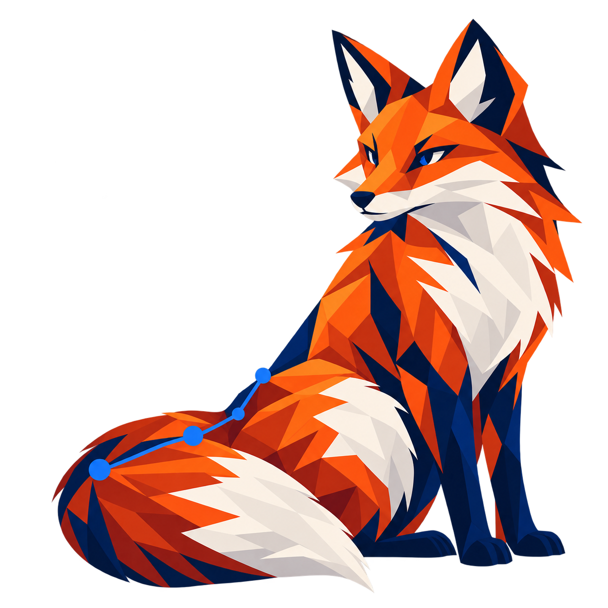

Selected work / 01
The work behind the questions.
Projects spanning program outcomes, AI quality, mathematical research, and empirical modeling.

01 / EDUCATION + PREDICTIVE MODELINGIdentifying withdrawal risk in program applications
Built and retrospectively evaluated a modeling pipeline on 683 historical AI4ALL applications. Compared statistical and tree-based approaches using structured and text-derived features, then examined whether a proposed selection strategy could disproportionately affect priority populations.
Random forestNLPModel evaluationResponsible AI
RESULT / RETROSPECTIVE STUDY75.9–80.3%
classification accuracy across evaluated approaches
Highest-risk selection strategies produced 37.5–56.25% precision. The findings informed consideration of future intervention; the model was not production deployed.
02 / AI QUALITYReducing errors in generated learning content
Developed Python and LLM workflows with structured validation, readability checks, regeneration, and QA. Error analysis and iterative improvements contributed to an approximately 38% reduction in AI-generated content errors.
PythonLLM evaluationAWS Bedrock
03 / AUDIO + STATISTICSWord counting from audio features
Analyzed roughly 2,800 Mozilla Common Voice clips. Compared regression approaches and baselines; a three-feature model lowered validation MSE against a fixed-parameter counter, while modest R² revealed important limits.
Feature engineeringRegressionBaseline comparison
Read the notebook ↗04 / ORIGINAL RESEARCHBoolean Twice Monoids
Doctoral research in universal algebra: new theoretical structures, classification results, and formal soundness and completeness arguments. The same investigative discipline grounds my applied work.
Mathematical researchFormal proofCommunication